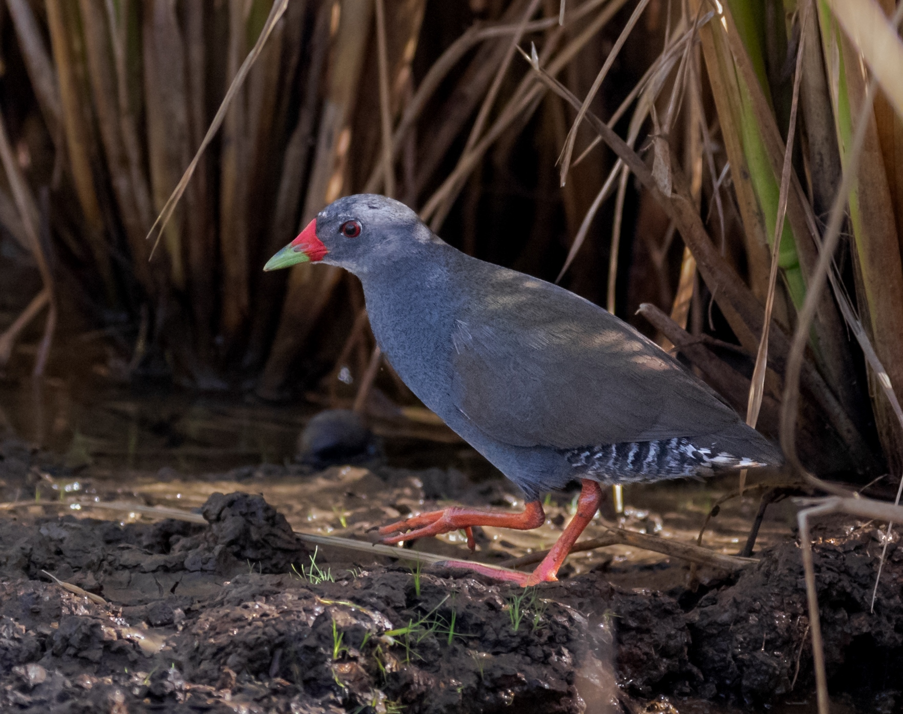

Neocrex erythrops
The Paint-billed Crake is a fairly small rail, mostly grey below and olive-brown above with bicolored bill and pinkish legs. They are black and white bands on vent can be hard to see. They are shy and generally uncommon to rare. They are most often found in dense marshy habitats, including flooded ricefields and pastures.